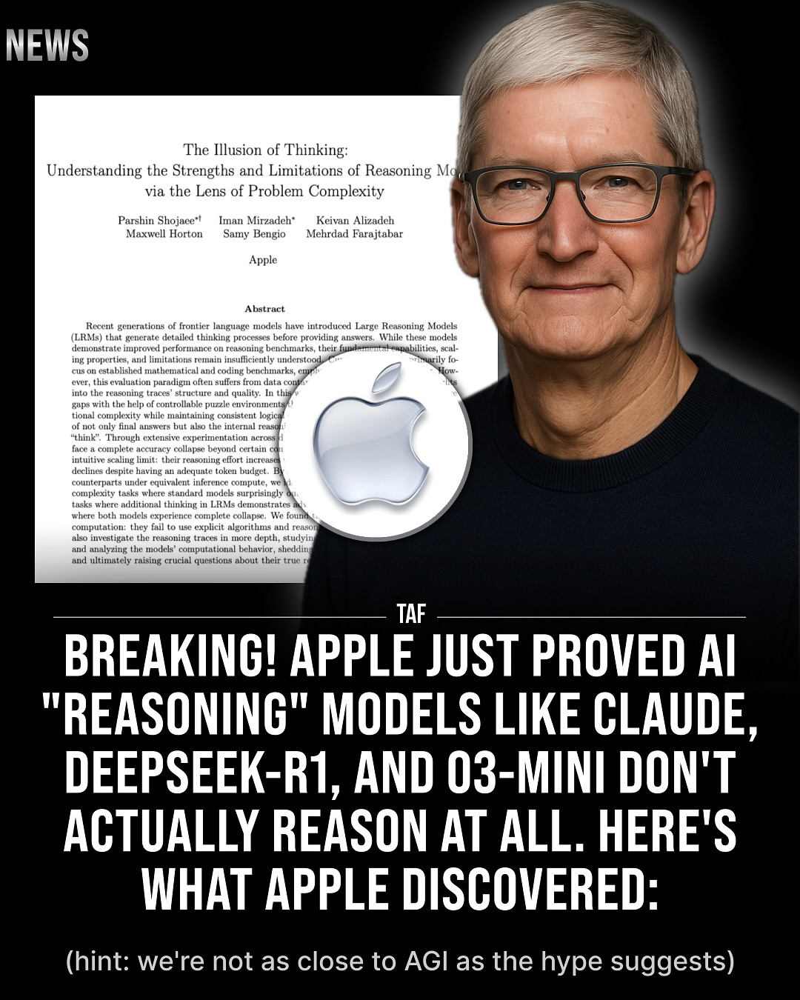
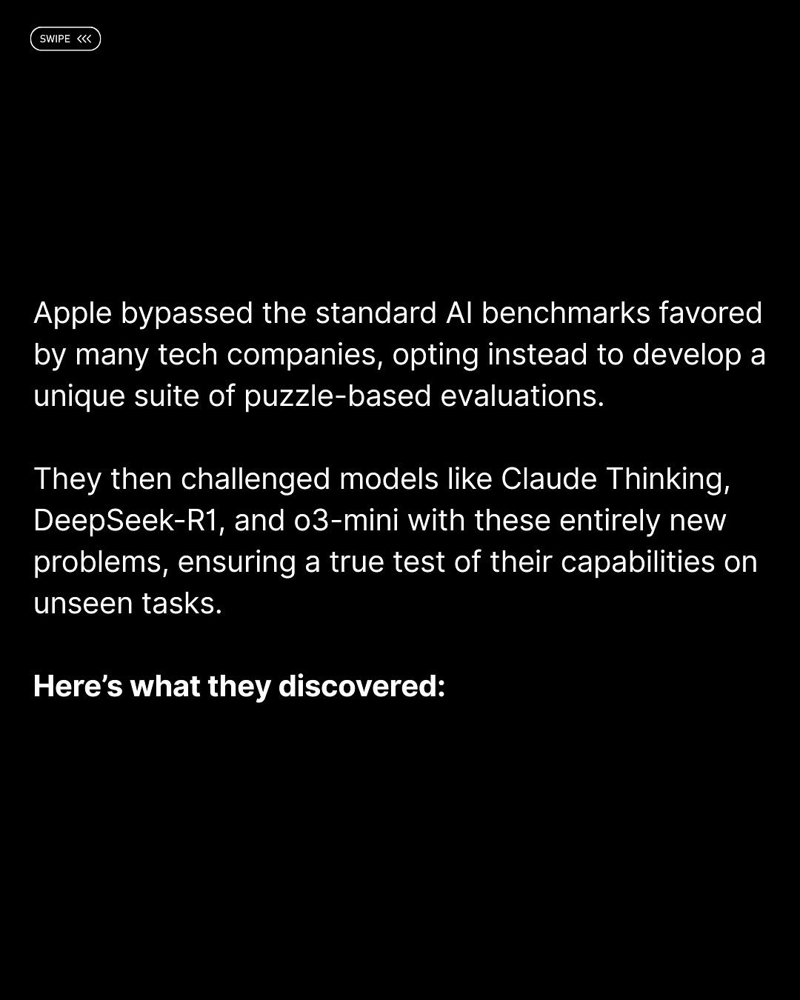
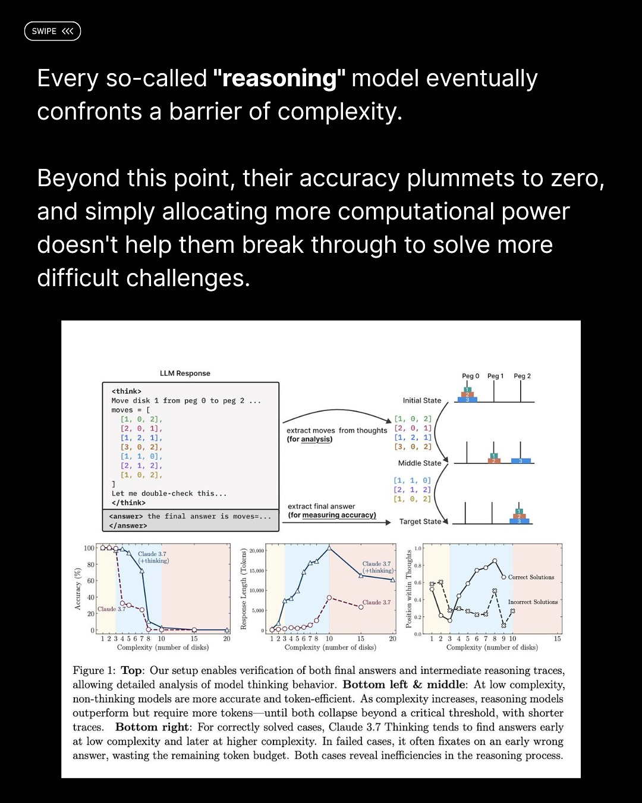
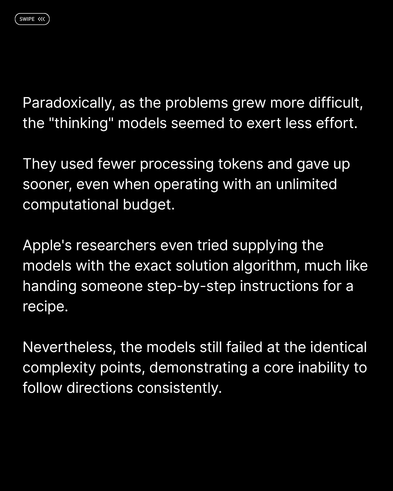
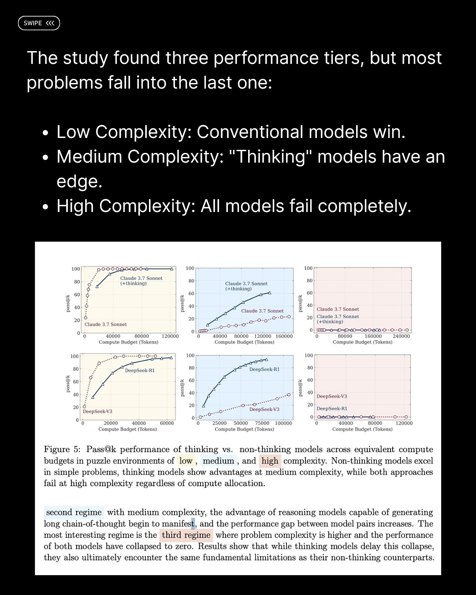
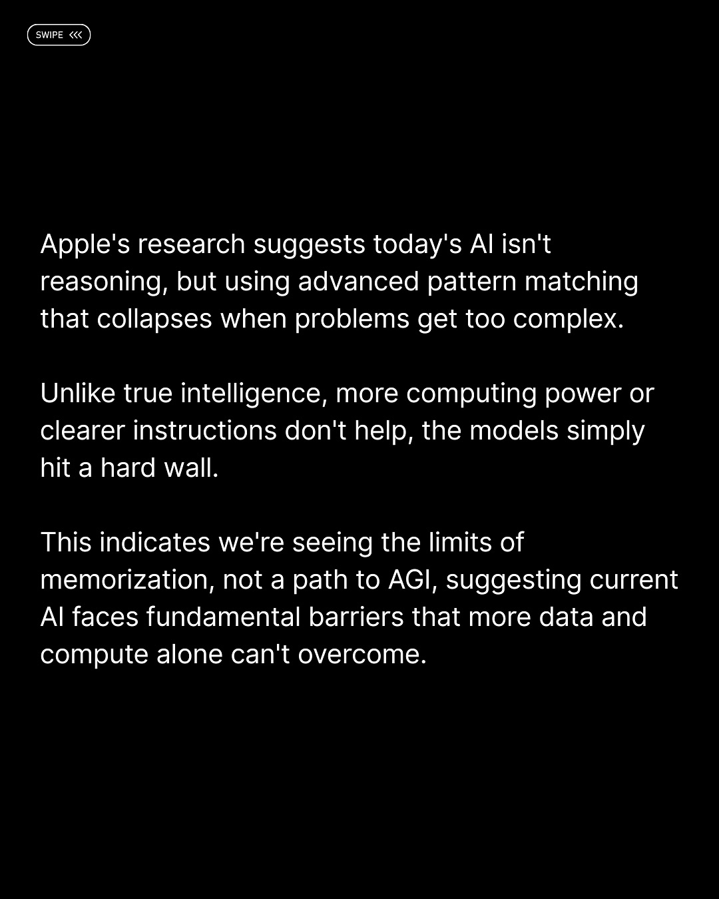
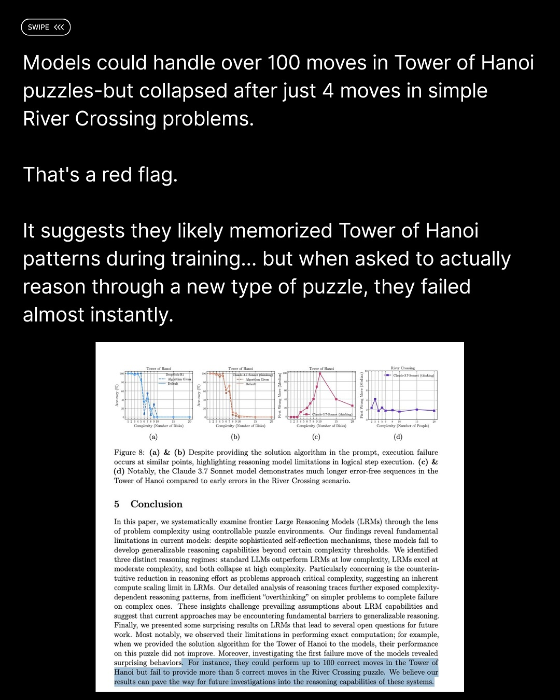
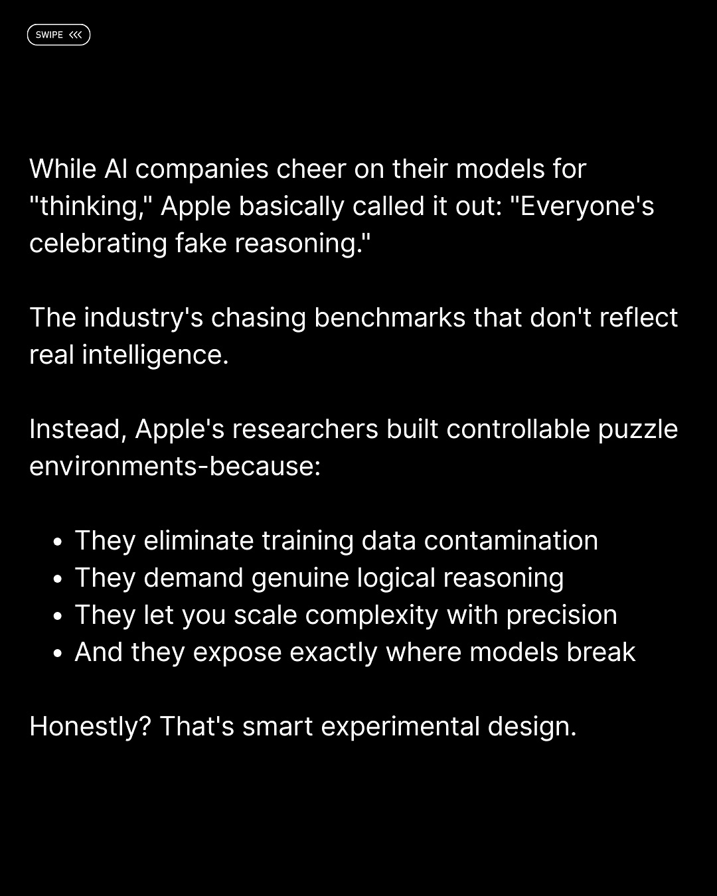
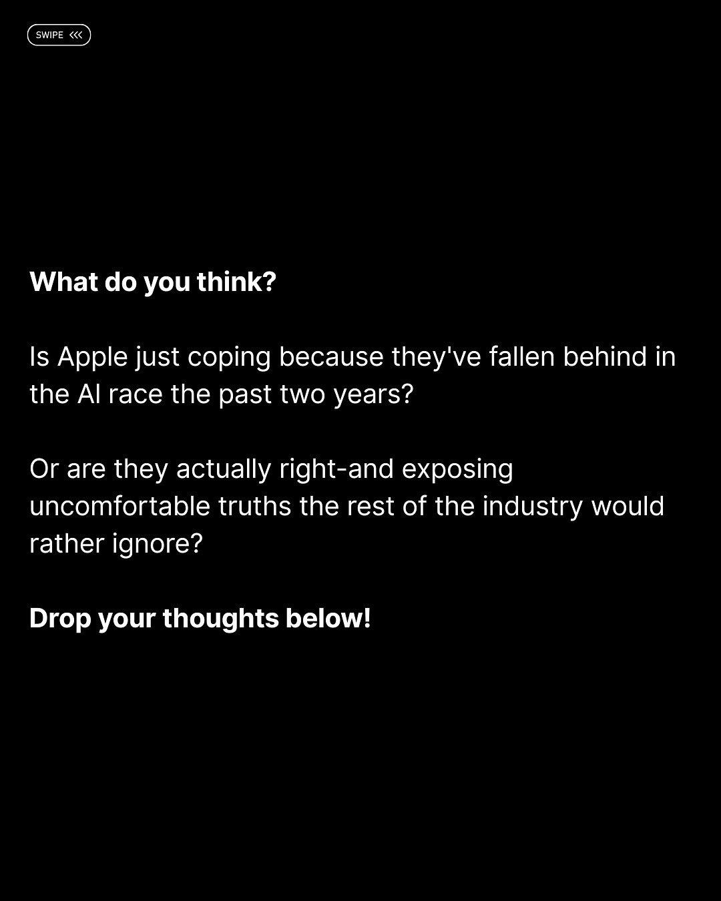

Instagram Post

NEWS The Illusion of Thinking: Understanding the...
carousel (10 slides) (enriched by ClaudeClaw)
Summary
NEWS The Illusion of Thinking: Understanding the Strength... | NEWS The Illusion of Thinking: Understanding the Strength... | SWIPE <<< Apple bypassed the standard AI benchmarks favor... | SWIPE <<< Every so-called "reasoning" model eventually co... | SWIPE <<< Paradoxically, as the problems grew more diffic... | SWIPE <<< The study found three performance tiers, but mo... | SWIPE <<< Apple's r...
1
NEWS The Illusion of Thinking: Understanding the Strengths and Limitations of Reasoning Models via the Lens of Problem Complexity Parshin Shojaee* Iman Mirzadeh* Keivan Alizadeh Maxwell Horton Samy Bengio Mehrdad Farajtabar Apple Abstract Recent generations of frontier language models have introduced Large Reasoning Models (LRMs) that generate detailed thinking processes before providing answers. While these models demonstrate improved performance on reasoning benchmarks, their fundamental capabilities, scal- ing properties, and limitations remain insufficiently understood. Primarily fo- cus on established mathematical and coding benchmarks, emp How- ever, this evaluation paradigm often suffers from data con into the reasoning traces' structure and quality. In this gaps with the help of controllable puzzle environments) tional complexity while maintaining consistent logica of not only final answers but also the internal reaso "think". Through extensive experimentation across face a complete accuracy collapse beyond certain con intuitive scaling limit: their reasoning effort increase declines despite having an adequate token budget. By counterparts under equivalent inference compute, we complexity tasks where standard models surprisingly tasks where additional thinking in LRMs demonstrates ad where both models experience complete collapse. We found computation: they fail to use explicit algorithms and reaso also investigate the reasoning traces in more depth, studyin and analyzing the models' computational behavior, shedding and ultimately raising crucial questions about their true re TAF BREAKING! APPLE JUST PROVED AI "REASONING" MODELS LIKE CLAUDE, DEEPSEEK-R1, AND O3-MINI DON'T ACTUALLY REASON AT ALL. HERE'S WHAT APPLE DISCOVERED: (hint: we're not as close to AGI as the hype suggests)
A smiling Tim Cook, CEO of Apple, is shown in a close-up, partially obscuring a research paper titled "The Illusion of Thinking" and a glowing Apple logo, with a large text overlay announcing Apple's findings on AI reasoning models.
2
NEWS The Illusion of Thinking: Understanding the Strengths and Limitations of Reasoning Mo via the Lens of Problem Complexity Parshin Shojaee* Iman Mirzadeh* Keivan Alizadeh Maxwell Horton Sam
3
SWIPE <<< Apple bypassed the standard AI benchmarks favored by many tech companies, opting instead to develop a unique suite of puzzle-based evaluations. They then challenged models like Claude Thinking, DeepSeek-R1, and o3-mini with these entirely new problems, ensuring a true test of their capabilities on unseen tasks. Here's what they discovered:
The image displays white text on a black background, discussing Apple's approach to AI benchmarks and evaluations.
4
SWIPE <<< Every so-called "reasoning" model eventually confronts a barrier of complexity. Beyond this point, their accuracy plummets to zero, and simply allocating more computational
5
SWIPE <<< Paradoxically, as the problems grew more difficult, the "thinking" models seemed to exert less effort. They used fewer processing tokens and gave up sooner, even when operating with an unlimited computational budget. Apple's researchers even tried supplying the models with the exact solution algorithm, much like handing someone step-by-step instructions for a recipe. Nevertheless, the models still failed at the identical complexity points, demonstrating a core inability to follow directions consistently.
The image displays white text on a black background, discussing the performance and limitations of "thinking" models in AI research.
6
SWIPE <<< The study found three performance tiers, but most problems fall into the last one: Low Complexity: Conventional models win. Medium Complexity: "Thinking" models have an edge. High Complexity
7
SWIPE <<< Apple's research suggests today's AI isn't reasoning, but using advanced pattern matching that collapses when problems get too complex. Unlike true intelligence, more computing power or clearer instructions don't help, the models simply hit a hard wall. This indicates we're seeing the limits of memorization, not a path to AGI, suggesting current AI faces fundamental barriers that more data and compute alone can't overcome.
A screenshot displays white text on a black background, discussing Apple's research on AI limitations, with a "SWIPE <<<" indicator in the top left corner.
8
SWIPE <<< Models could handle over 100 moves in Tower of Hanoi puzzles-but collapsed after just 4 moves in simple River Crossing problems. That's a red
9
SWIPE <<< While AI companies cheer on their models for "thinking," Apple basically called it out: "Everyone's celebrating fake reasoning." The industry's chasing benchmarks that don't reflect real intelligence. Instead, Apple's researchers built controllable puzzle environments-because: • They eliminate training data contamination • They demand genuine logical reasoning • They let you scale complexity with precision • And they expose exactly where models break Honestly? That's smart experimental design.
The image displays white text on a black background, discussing AI models, Apple's research, and experimental design.
10
SWIPE <<< What do you think? Is Apple just coping because they've fallen behind in the AI race the past two years? Or are they actually right-and exposing uncomfortable truths the rest of the industry would rather ignore? Drop your thoughts below!
A social media post with white text on a black background, posing a question about Apple's involvement in the AI industry.
All slides







